Learning Objectives
After completing this lesson, you’ll be able to:
- Remove pre-linked parameters.
- Create a simple user parameter.
- Create a Choice user parameter with different values for Display and Value.
- Use a Choice parameter to define coordinate systems.
- Manually link a user parameter to an FME parameter.
- Publish the Feature Types to Read parameter.
- Set up and use alternative display names in the Feature Types to Read parameter, including grouping feature types.
Instructions
In this lesson, you will:
- Scroll down to read the text below.
- Optional: You can view the video instead of reading the text. The video covers the text material.
- Complete the exercise by following the steps.
- Complete the Quiz toward the bottom of the page.
- Optional: Let us know if you found this lesson relevant to your role by filling out the survey at the bottom of the page.
- Click 'Next' to mark the lesson complete.
Resources
- Starting Workspace
- C:\FMEData\Workspaces\AdvancedDataTransformation\code-review-a-colleagues-workspace.fmw
- Complete workspace
- C:\FMEData\Workspaces\AdvancedDataTransformation\code-review-a-colleagues-workspace-complete.fmw
- CommunityMap.gdb.zip (Esri Geodatabase)
- C:\FMEData\Data\CommunityMapping\CommunityMap.gdb
Exercise

Amar is a new FME user. He's authored a workspace that converts data from an Esri Geodatabase to Esri Shapefile. However, as he has not yet taken an FME Form training course, he is not very confident in his workspace design.
He asks you to conduct a "code review" of his workspace. One of the main tasks is creating user parameters to replace hard-coded values.
1) Open Starting Workspace
- Start FME Workbench (2026.1 or later).
- Open the starting workspace (C:\FMEData\Workspaces\AdvancedDataTransformation\code-review-a-colleagues-workspace-begin.fmw).
This is Amar's workspace:
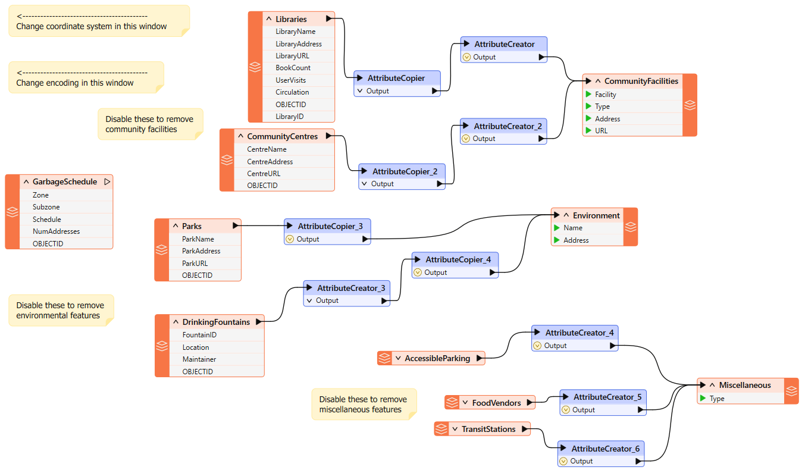
- Notice that it converts from an Esri Geodatabase to Esri Shapefile format.
- Currently, the user must disable feature types to choose which ones to process.
- Similarly, they must set the destination coordinate system and data encoding using Navigator parameters. This is all very user-intensive.
- Also, notice that the only annotations in the workspace help the end user make such edits.
- There should be no need for that; published parameters should prompt the user instead, and that is what we will implement here.
2) Clean Up Auto-Created User Parameters
- Expand the User Parameters section of the Navigator window.
- Notice how there are already user parameters for the source and destination datasets.
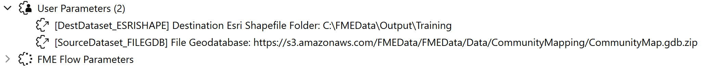
Your public safety colleague tells you the source data will never change, so that parameter is useless.
- Delete the user parameter labeled SourceDataset_FILEGDB.
- However, she tells you that the user can set the destination location, so keep the parameter for DestDataset_ESRISHAPE.
3) Create Encoding Parameter
The Public Safety team wants to make it easier to set the encoding of the output dataset. Currently, a workspace annotation points users to where that writer parameter exists in the Navigator window!
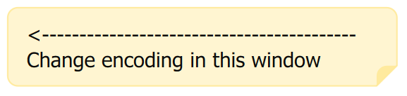
This shows you how difficult it is for them to locate the correct parameter in the Navigator window. Let's solve that with a user parameter.
- Locate the Shapefile (ESRISHAPE) writer in the Navigator window and expand the list of parameters.
- Identify the Character Encoding parameter
- Right-click the Character Encoding parameter and choose Create User Parameter.
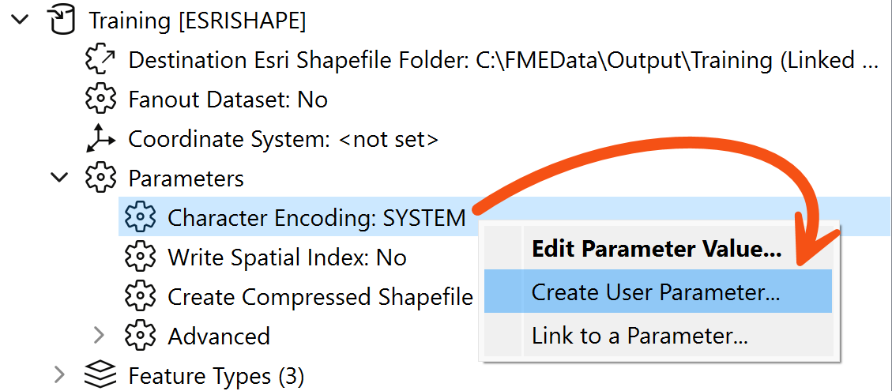
- Click OK on the dialog that opens.
- FME creates a user parameter and links it to the Character Encoding parameter. Now, a user parameter makes it easy to set that FME parameter.
4) Create Coordinate System Parameter
You are told that another requirement is the ability to set the output coordinate system. Again, this is currently done by using an annotation to point the user towards the Navigator Window.
However, if you publish the writer’s coordinate system parameter, try it and see, but there will be a problem. The parameter will allow the end-user to select any coordinate system supported by FME.
This is not necessarily very useful. Since the data is located in Vancouver, BC, it makes little sense for the user to be able to reproject it to (for example) NZMG (a New Zealand coordinate system).
It would be preferable if the parameter only allowed the end-user to select a coordinate system from a smaller list.
- So, create a new user parameter (right-click User Parameters > Manage User Parameters, then click the green plus button) of type Choice.
- Set the Parameter Identifier to be CoordSysParam.
- Set the Label to be "Select Output Coordinate System".
- Disable Required.
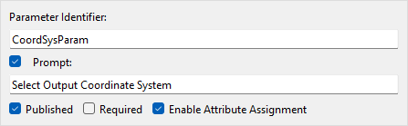
- Set Choice Configuration to Dropdown.
- We would normally enter values manually into the Value and Display column, but for coordinate systems (and reader/writer formats), we have the option to have FME define them for us.
- Click the Import button and choose Coordinate Systems.
- You may have to use your middle mouse wheel to scroll down to find the Import button under the Choices table. Alternatively, resize the Parameter Manager window to be large enough that the Import button appears.
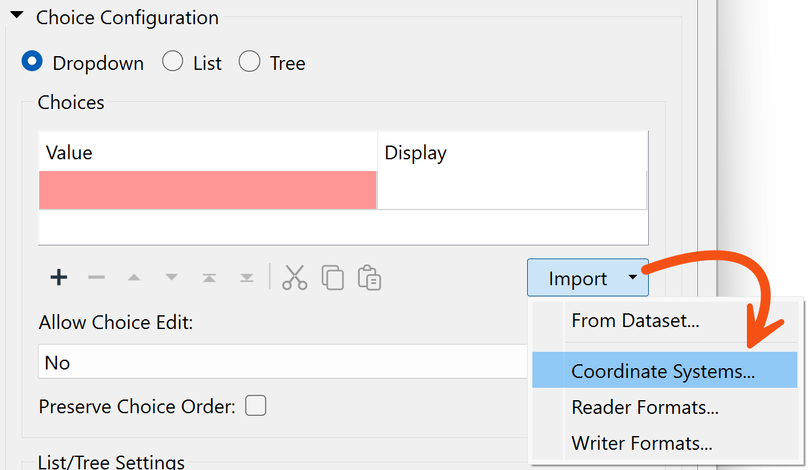
This opens a list of coordinate systems that we can import as values in our user parameter.
- Locate and put a checkmark in the box for the following coordinate systems:
- UTM83-10
- BCALB-83
- LL83
- CANBC-LCC
- Click OK to close this dialog.
- You will be returned to the configuration dialog and find that the Value and Display columns have been automatically filled for these coordinate systems:
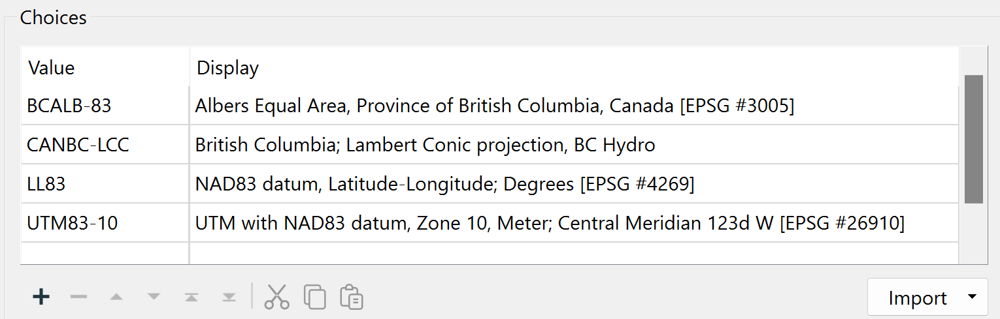
The left side shows the value FME will receive, and the right side shows what the user is prompted to select.
- Click OK to close the dialog.
5) Link Coordinate System Parameter
Now we have the user's selection, but we still have to apply it to the FME parameter.
- Locate the writer’s Coordinate System parameter, right-click on it, and choose Link to User Parameter.
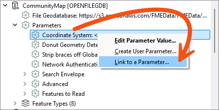
- When prompted, select the newly created CoordSysParam and click OK to accept the selection.
- Now, when the workspace is run, the user is prompted to select a coordinate system, and that system's short name value is passed to FME.
6) Create Tables Parameter
The final task for us here is to create a way to decide which tables are going to be read. If you remember, your colleagues currently do this by disabling various reader feature types. However, there is a better method.
This is an interesting task because we want to control the source tables (Libraries, Parks, etc.), but based on the selection of destination tables (CommunityFacilities, Environment, and Miscellaneous).
For example, we want the user to select output feature types like "Environment", which needs both "Parks" and "DrinkingFountains" reader feature types.
However, we can do this very easily.
- Locate the Feature Types to Read parameter in the CommunityMap reader under the Features to Read parameters section (in the Navigator window):
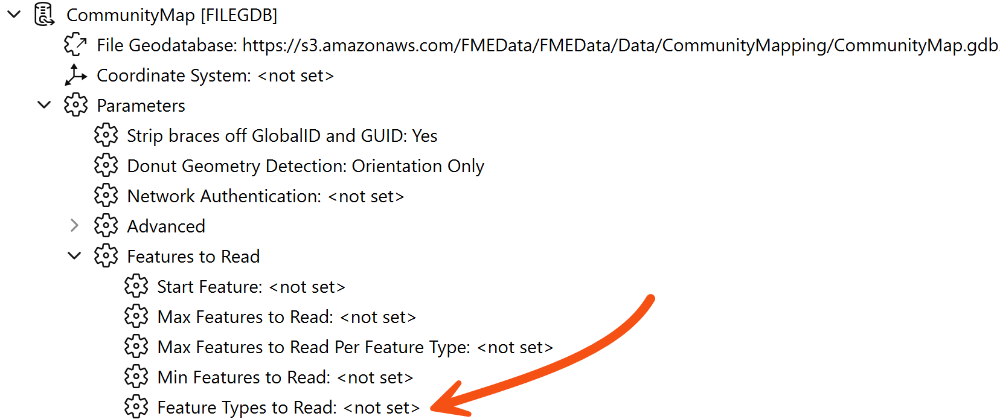
- Right-click on Feature Types to Read and choose Create User Parameter.
- A dialog will open that is already populated with a list of feature types.
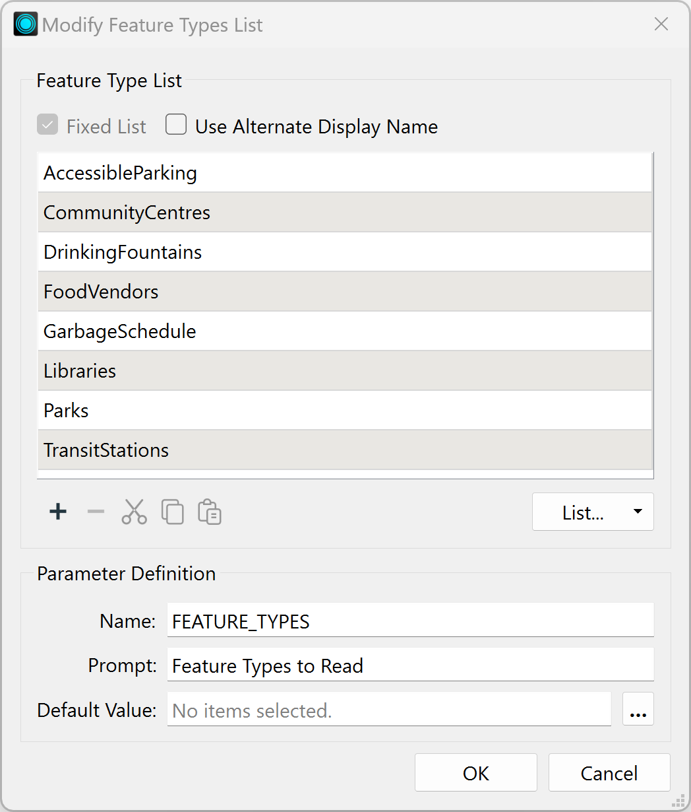
- Check the box labeled Use Alternate Display Name.
- This option allows you to give alternative names for each feature type. We need to use this dialog to group common reader feature types together under a single display name.
- Delete the entry for GarbageSchedule, as this data isn’t connected and is not needed.
- Then, match the contents of the workspace by editing the Display Names. They should match as follows (the order is not important):
| Display Name |
Feature Type |
| Miscellaneous |
AccessibleParking |
| Community Facilities |
CommunityCentres |
| Environment |
DrinkingFountains |
| Miscellaneous |
FoodVendors |
| Community Facilities |
Libraries |
| Environment |
Parks |
| Miscellaneous |
TransitStations |
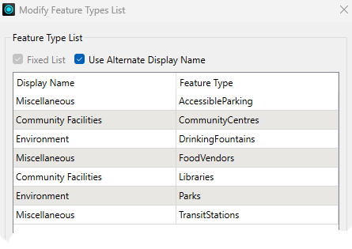
- Underneath that, change the Label to read “Tables to Write”.
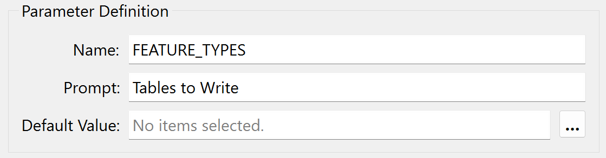
- Click OK to close the dialog.
What we have done here is set up a list of output layers to select from, with a list of input layers that each refers to.
7) Save and Run Workspace
- Save the workspace.
- Then run the workspace, ensuring Prompt for Parameters is enabled.
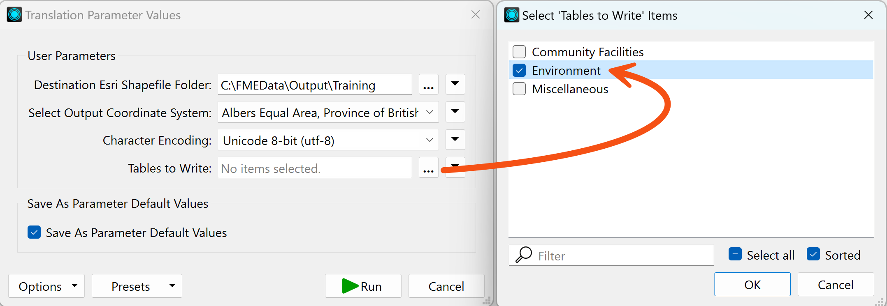
- Pick Unicode 8-bit (utf-8) as the encoding.
- Select a coordinate system, noting how the user is restricted to those chosen by us.
- Select one or two of the groups of tables to write.
- Click Run.
- The translation will be carried out.
- Inspect the data to ensure the results are correct.
- The Community Facilities option – for example – should be made up of both libraries and community centers.
Challenge
Another part of this code review is cleaning up the workspace style. If you want a challenge, tidy up the workspace by giving it a more logical structure and adding bookmarks and annotations.